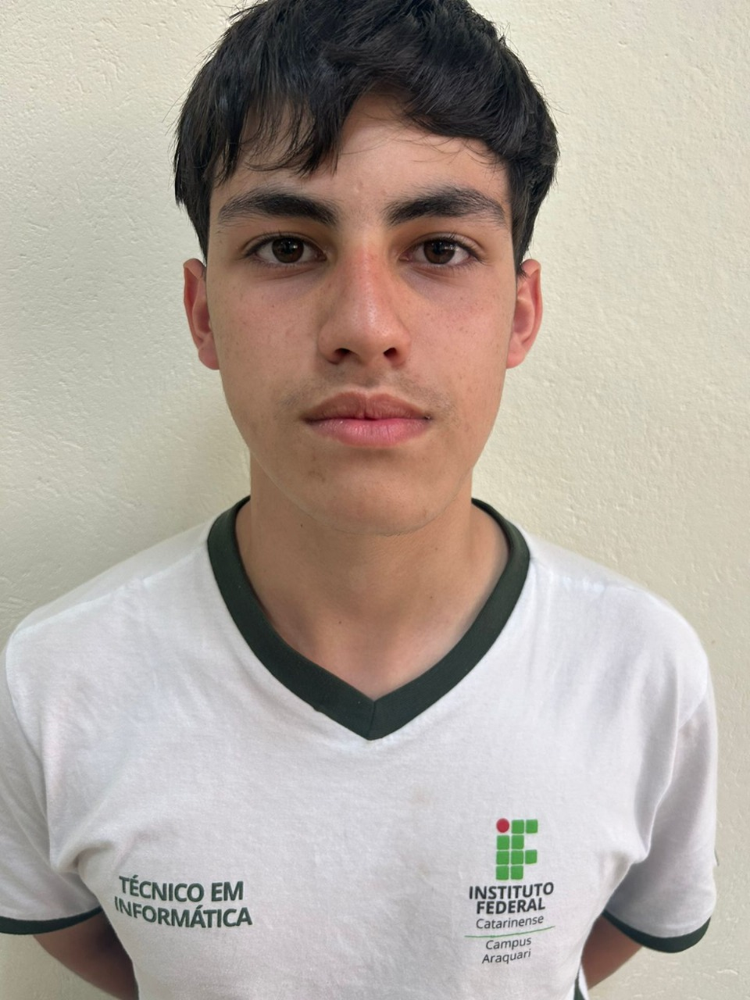
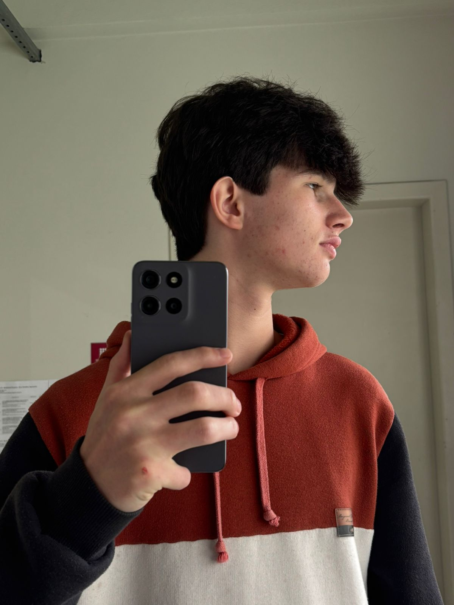

Sobre o Projeto
O Modo Soneca é um site feito por estudantes do IFC campus araquari com a proposta de ajudar principalmente os estudantes que tem dificuldade com o sono.
Pensamos em criar o Modo Soneca como algo que possa não apenas ajudar os estudantes que vão ver ele, mas também que todas as pessoas possam se identificar tenha alguma ajuda - mesmo que pouca.
Se você que está lendo se identificar, seguir as dicas e não conseguir melhorar o seu sono, procure um médico.
Criadores do projeto
-

Pedro Antonio Schetz Dias da Silva
Estudante do IFC, 15 anos, ajudou programando o site.
-

Ana Carolini
Criou e fez ajudou nas redes sociais, 16 anos, estudante do IFC.
-
Irene Bittelbrun
Ajudou no site, criou as redes sociais, ajudou na parte criativa, 16 anos, estudante do IFC.
-

Otavio Felipe de Oliveira
Ajudou marcando as atas, ajudou no site, 16 anos, Estudante do IFC.
-

Arthur Schmidt
Ajudou no site, 16 anos estudante do IFC, ajudou marcando as atas.